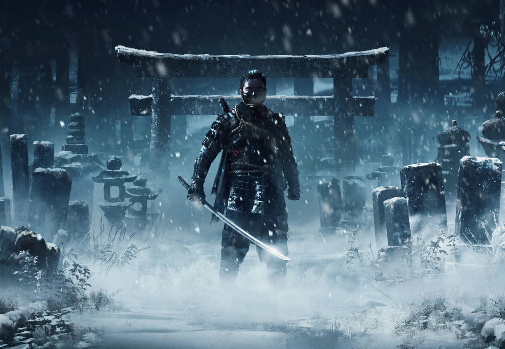
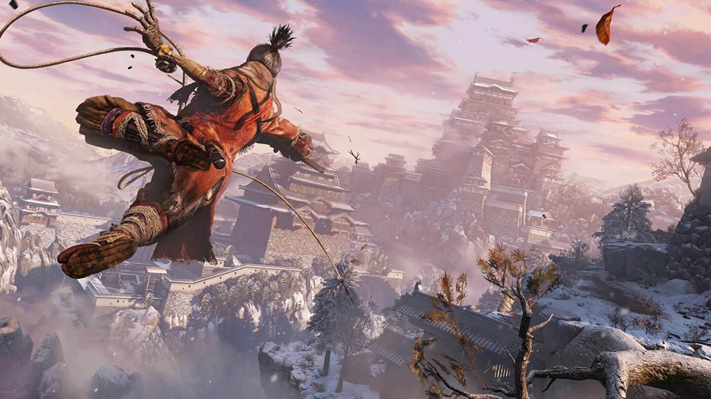
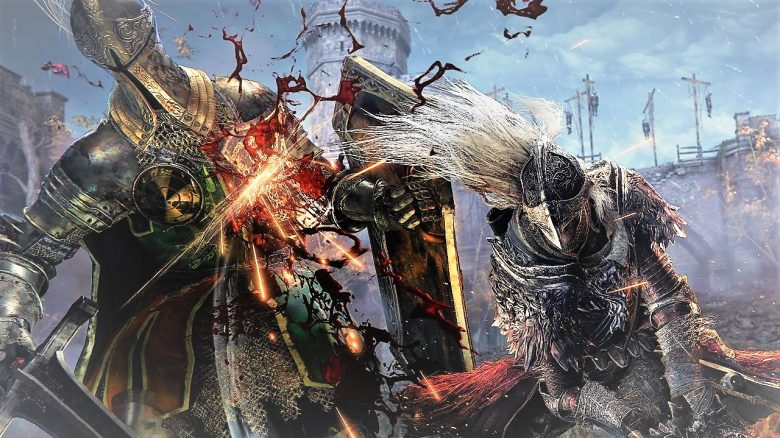

The Legend Of Zelda Breath of The Wild

The Game Awards for Most Anticipated Game(2016)
The Game Award for Game of the Year(2017)
The Game Award for Best Action/Adventure(2017)
The Game Award for Best Game Direction(2017)
BAFTA Games Award for Innovation(2018)
The Legend of Zelda Breath Of The Wild has won a total of 189 Awards. Click this link to Read More!
Ghost Of Tsushima

The Game Awards - Player's Voice Award(2020)
The Game Award for Best Art Direction(2020)
BAFTA Games Award for Audio Achievement(2021)
Ghost of Tsushima defeated The Last Of US II and won many more awards. Click this link to Read More!
Sekiro: Shadows Die Twice

The Game Award for Game of the Year(2019)
The Game Award for Best Action/Adventure(2019)
Sekiro: Shadows Die Twice, officially won two awards, however has many nominations. Click this link to Learn More!
Elden Ring

The Game Awards - Most Anticipated Game(2020)
The Game Awards - Most Anticipated Game(2021)
Golden Joystick Awards - Best Visual Design(2022)
Critics’ Choice Award(2022)
The Game Award - Game of the Year(2022)